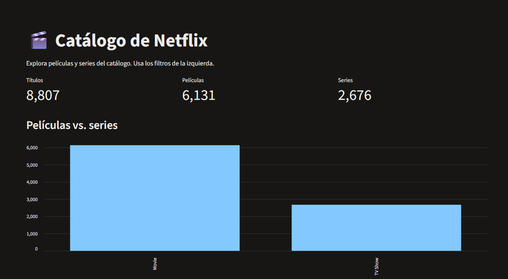
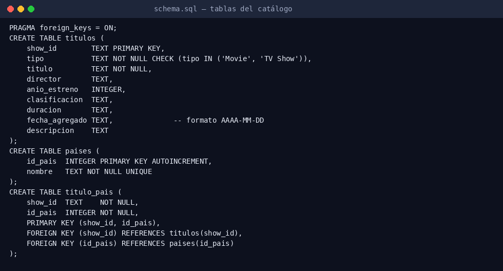
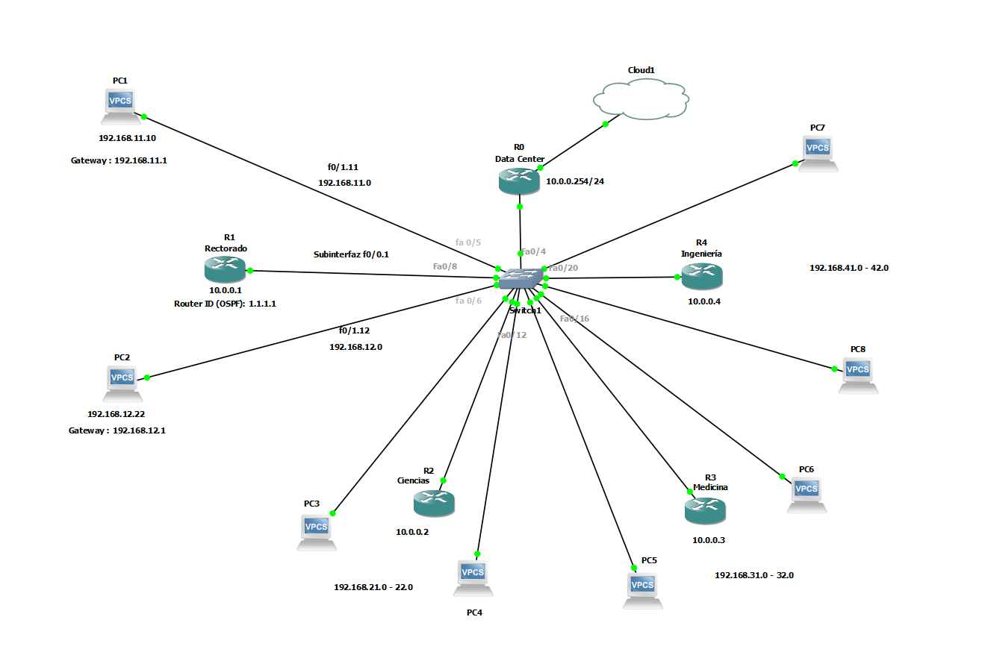
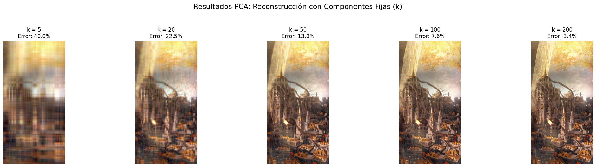
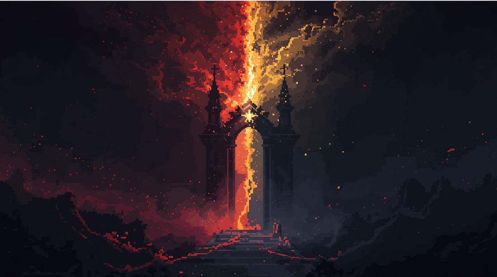

Franyer PérezCaracas, Venezuela • Ciencias de la Computación UCVCaracas, Venezuela • Computer Science, UCV
Disponible para nuevos retos en el áreaAvailable for new challenges in the field
Base de datosDatabasesRedesNetworksSeguridadSecurityProgramaciónProgrammingDesarrollo de juegosGame development
Sobre míAbout me
Estudiante de Ciencias de la Computación en la Universidad Central de Venezuela, con experiencia práctica en redes de computadoras y conocimiento parcial en seguridad y cifrado de datos. Combino el manejo de bases de datos relacionales con el desarrollo de programas en distintos lenguajes, y también desarrollo videojuegos, donde aplico lógica, estructuras de datos y diseño de sistemas.Computer Science student at Universidad Central de Venezuela, with hands-on experience in computer networks and partial knowledge of security and data encryption. I combine relational database management with programming in several languages, and I also develop video games, where I apply logic, data structures and system design.
PortafolioPortfolio
ProyectosProjects

2026
Catálogo de Netflix con StreamlitNetflix catalog with Streamlit
Aplicación interactiva para explorar 8,807 títulos con filtros, indicadores y gráficas.Interactive app to explore 8,807 titles with filters, indicators and charts.
PythonPandasStreamlit

2026
Base de datos del catálogo con SQLCatalog database with SQL
Modelo relacional con claves, una relación de muchos a muchos y diez consultas comentadas.Relational model with keys, a many-to-many relation and ten commented queries.
SQLSQLiteModelado relacional

2025 – 2026
Integración de red universitariaUniversity network integration
Laboratorio en equipo con cuatro routers: VLAN, DHCP, OSPF y NAT con salida a Internet.Team lab with four routers: VLANs, DHCP, OSPF and NAT with Internet access.
VLANOSPFNAT

2025 – 2026
Compresión de imágenes con SVD y PCAImage compression with SVD and PCA
Compresión de una imagen RGB midiendo error, varianza explicada y tasa de compresión.Compression of an RGB image, measuring error, explained variance and compression ratio.
PythonSVDPCA
C++
2026
Estructuras de datos y algoritmos en C++Data structures and algorithms in C++
Integración de estructuras de datos y algoritmos de búsqueda, backtracking y recursión, implementados desde cero.Integration of data structures and search, backtracking and recursion algorithms, built from scratch.
C++Estructuras de datosAlgoritmos

2026 · en desarrollo2026 · in development
Metroidvania 2D (en desarrollo)2D Metroidvania (in development)
Juego de acción y exploración con elementos de Soulslike, en fase de diseño y preproducción. Combate técnico, un mundo interconectado y una muerte con consecuencias.Action-exploration game with Soulslike elements, in design and pre-production. Technical combat, an interconnected world and death with consequences.
UnityDiseño de juegosMetroidvania
Arsenal técnicoTech stack
HabilidadesSkills
Análisis de datosData analysis
Limpieza, agrupación, visualización y aplicaciones interactivas.Cleaning, grouping, visualization and interactive apps.
Modelado relacional, consultas y diseño de tablas con claves.Relational modeling, queries and table design with keys.
SQLSQLiteMySQLPostgreSQLModelado DimensionalModelo RelacionalOptimización de ConsultasPL/SQL
Redes, Seguridad y CriptografíaNetworking, Security & Cryptography
Configuración de redes con equipos reales y simulados, y conocimiento parcial en seguridad y cifrado.Network configuration with real and simulated equipment, and partial knowledge of security and encryption.
Topologías/SegmentaciónEnrutamientoMonitoreo/Análisis de TráficoMikroTikFiltrado/FirewallsCriptografíaPKI/CertificadosProtocolos segurosFirmas digitales
Lenguajes de ProgramaciónProgramming Languages
Programas en distintos lenguajes, desde algoritmos hasta aplicaciones.Programs in several languages, from algorithms to applications.
C++PythonCJavaScript (ES6+)JavaHTML5 & CSS3C#
Desarrollo de videojuegosGame development
Diseño de un Metroidvania en desarrollo, desde el documento de diseño hasta el prototipo.Design of a Metroidvania in development, from the design document to the prototype.
UnityGame Design (GDD)Diseño de Mecánicas/EnemigosNarrativa/WorldbuildingPrototipado
Herramientas y FrameworksTools & Frameworks
Herramientas de trabajo, control de versiones y simulación.Work tools, version control and simulation.
Formación & CertificacionesEducation & Certifications
FormaciónEducation
Licenciatura en Ciencias de la ComputaciónBachelor's in Computer Science
Universidad Central de Venezuela · Facultad de CienciasFaculty of Sciences
En curso · CaracasIn progress · Caracas
Durante la carrera he construido una base sólida en Estructuras de Datos y Algoritmos, Programación Orientada a Objetos, Bases de Datos Relacionales, Redes de Computadoras y Seguridad.Throughout the program I have built a solid foundation in Data Structures and Algorithms, Object-Oriented Programming, Relational Databases, Computer Networks and Security.
CertificacionesCertifications
Taller «WiFi al alcance de todos»"WiFi for everyone" workshop · GitHub Campus Expert
Febrero 2026February 2026
Introducción a las redes inalámbricas y móviles, con configuración de equipos MikroTik y antenas.Introduction to wireless and mobile networks, with configuration of MikroTik devices and antennas.
ContactoContact
Listo para ayudarte en tus proyectos o resolver cualquier tipo de problemaReady to help with your projects or solve any kind of problem
Abierto a oportunidades de desarrollo de software, redes de computadoras, seguridad en redes, bases de datos y programación, como desarrollador junior, desarrollador de videojuegos o en proyectos por contrato. Disponible para trabajar de manera remota o híbrida.Open to opportunities in software development, computer networks, network security, databases and programming, as a junior developer, video game developer, or on contract projects. Available to work remotely or in a hybrid model.